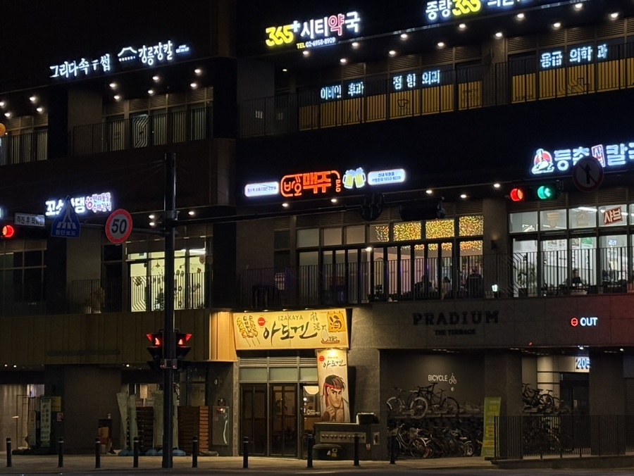

Our Story
바오맥주 이야기
불맛·바삭함·시원함이 만나는 곳

Philosophy
우리의 철학
바오맥주는 단순히 음식을 파는 공간이 아닙니다. 퇴근 후의 한 잔, 소중한 사람과의 저녁, 팀원들과의 회식— 그 모든 순간이 더 특별해지길 바라는 마음으로 시작했습니다.
"좋은 음식은 좋은 시간을 만들고,
좋은 시간은 좋은 기억이 됩니다."
직화 바베큐의 불향은 오랜 연구 끝에 완성된 결과물입니다. 단순히 고기를 굽는 것이 아니라, 온도와 시간, 불의 세기를 조절하며 최적의 맛을 끌어냅니다.
탕수육 역시 자체 개발한 레시피로 만들어집니다. 튀김옷의 두께, 소스의 산도, 육즙의 보존— 이 모든 것이 바오맥주만의 탕수육을 완성시킵니다.
메뉴 보러 가기
Numbers
숫자로 보는 바오맥주
2019
창업 연도
0%
고객 재방문율
0+
대표 메뉴 수
0
구글 리뷰 평점
Gallery
바오맥주 갤러리
직접 눈으로 확인하는 바오맥주의 분위기
